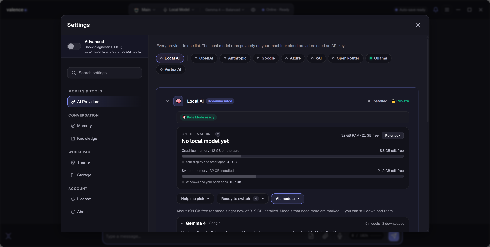
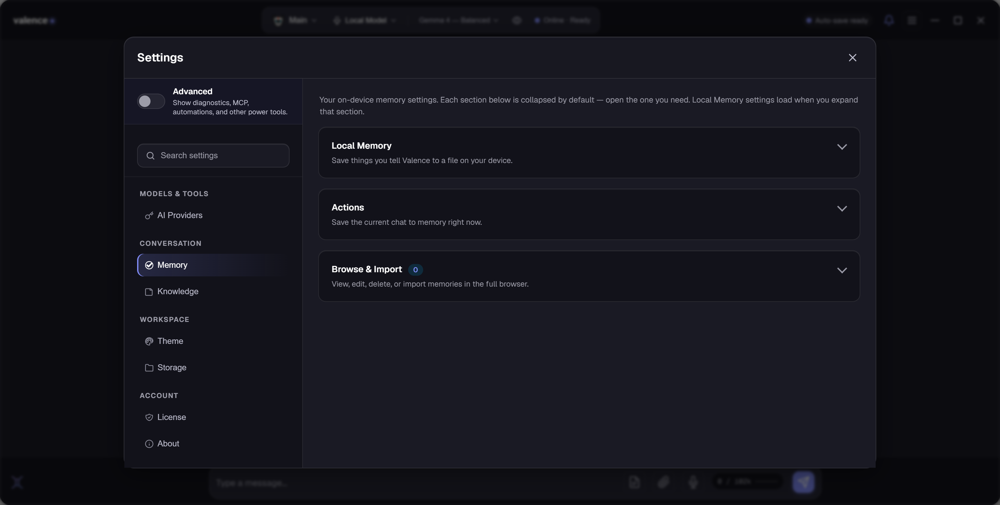
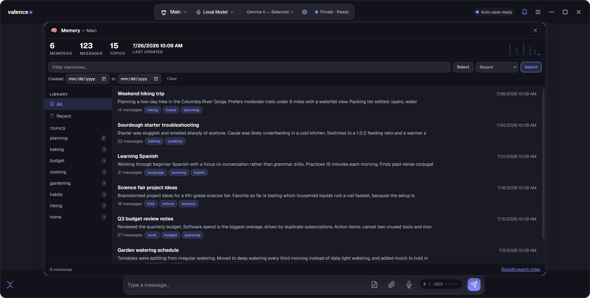

New to Valence? Start with Getting Started. It walks the whole journey. These guides are for when you want one specific task done: connect a cloud AI, turn on memory, or bring your old chats across.
Valence comes with its own AI that runs on your computer. For most people this is the whole answer, it's private, it's free, it works offline, and there's nothing to sign up for. Only read the next guide if you specifically want ChatGPT, Claude, or Gemini as well.
Your built-in AI is set up during first run. If you ever need to check it or switch models, it lives in Settings → AI Providers under Local AI.
Gemma 4 for everyday chat, family use, and Kids Mode. Qwen 3 if you want code, maths, or non-English conversation, but it's more verbose and isn't suitable for Kids Mode. Valence dims any model that's too big for your machine, so you can't accidentally pick one that won't run well.

Valence can talk to the big cloud AIs too. You pay that company directly for what you use, Valence never takes a cut and never sees your conversations. Your key is encrypted and stays on your computer.
Valence stores keys encrypted on your machine using Windows' own protection, and talks to the provider directly from your computer. We don't proxy, store, or see your messages or your key.
A key is like a tab at a shop, you're billed for what you use, usually fractions of a penny per message. Most providers give new accounts free starter credit. If you'd rather never think about billing, stay on the built-in local AI: it's genuinely free.
Each link below goes to that provider's key page. Create an account, make a key, copy it, and paste it into Valence.
The most forgiving free option of the big three, good if you want to try a cloud AI without paying anything.
Key starts with: AI… Get a Gemini key → OpenAIPay as you goThe models behind ChatGPT. The most widely used option, and a safe default if you're unsure.
Key starts with: sk-… Get an OpenAI key → AnthropicPay as you goClaude. Strong at long documents, careful writing, and thinking through a problem with you.
Key starts with: sk-ant-… Get a Claude key → OpenRouterSome free modelsOne key that reaches many different AIs. Handy if you like experimenting with models.
Key starts with: sk-or-… Get an OpenRouter key → xAI (Grok)Free monthly creditGrok, from xAI. Worth a look if you want up-to-the-minute knowledge.
Key starts with: xai-… Get an xAI key → OllamaFree · on your PCAlready run your own models with Ollama? Valence connects to it: no key, nothing leaves your machine.
No key needed Get Ollama →Azure OpenAI and Vertex AI are available for business and enterprise setups: both appear as chips in Settings → AI Providers and need details from your organisation's cloud account.
With memory on, Valence carries what matters between conversations. Everything is stored on your computer, and you can read, search, or delete any of it whenever you like.
Open Browse & Import → Open Memory Browser (or Memory browser in the menu). You'll see every memory with its title, summary, and topics: search them, or delete any one permanently. Nothing is hidden from you.

Valence can pull your existing conversations in so it feels familiar from day one. They become searchable memories on your machine. They are not uploaded anywhere.
ChatGPT also accepts a ZIP. If you'd rather not sign in through Valence, export your data from ChatGPT's own settings and choose Import from ZIP file instead. Gemini is slower: it has no bulk export, so Valence reads conversations one at a time. Leave it running.

Expected for a new app. Keep the file (••• or ⌃ next to the download → Keep), then on first open click More info → Run anyway. It only happens once.
Your local AI warms up the first time you use it after opening Valence. The status badge shows what it's doing. After that it stays warm and answers quickly.
Copy the key again. A stray space at either end is the usual culprit. Also check that account has credit; most providers stop working the moment the free credit runs out.
Memory has to be switched on first (Settings → Memory). Even then it saves what looks important, not everything. Open the Memory Browser to see exactly what it kept.
Check which AI is selected at the top of the chat. A small local model on a modest PC won't match a large cloud model, that's the trade for privacy and zero cost.
Email help@helixailabs.com. Valence also keeps logs on your machine, Settings → Diagnostics → Log Files shows where they are if we ask.